Chapter 5 inleiding shiny dashboard
woaah dashboard
How this dashboard looks like.
knitr::include_graphics("dashboard_pictures/instructions_tab.PNG")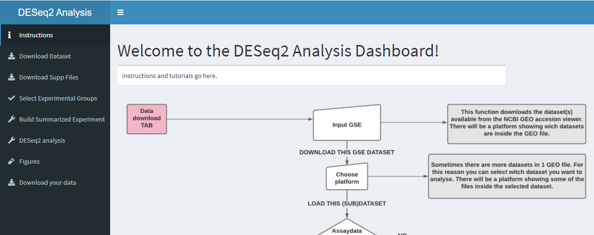
5.1 Download function
5.1.1 The working code behind the application.
The download function is called the new download function, because we changed the orginal function to apply to different type of datasets, instead of one. The function should work for text and csv files.
The code below is the function for downloading de GSE dataset. The code is "split" to create a loop, so the entire dataset is downloaded. With "purr" a map is created to store the dataset. This way the dataset can be accessed easily. The last piece of the code downloads the dataset.
create_dir <- function(path) {}
new_download_function <- function(gse_id_number) {
datasets <- strsplit(gse_id_number, split = " ") %>% unlist
full_paths <- file.path(here::here("data"), datasets)
purrr::walk(
full_paths,
dir.create)
data_1 <- map2(
.x = datasets,
.y = full_paths,
getGEO,
GSEMatrix = TRUE,
filename = NULL
)
return(data_1)
}5.1.2 Shiny
5.1.2.1 Server.R
The dataset is downloaded with the new_download function.
gse_id_number <- eventReactive(input$action_gse_download, {
input$txt_gse_download
})
gse_dataset <- reactive({
new_download_function(gse_id_number())
}) The output of the contents of the GSE dataset. This shows different platforms. Below this code the phenodata of the platform choice gets loaded into a variable.
output$txtout_gse_download <- renderPrint(print(gse_dataset()))
phenodata <- eventReactive(input$action_select_platform, {
gse_dataset()[[input$select_platform]] %>%
pData()
})
output$tbl_platform_preview <- DT::renderDataTable(
phenodata() %>%
select(geo_accession, organism_ch1, characteristics_ch1, supplementary_file_1)
,
style = "bootstrap",
editable = TRUE,
server = TRUE
)5.1.2.2 UI.R
The code below creates a input box for downloading the GSE number of the dataset. The box below that shows the platforms that are in the dataset. Then the platform can be selected. The last box shows a bit of the phenodata so the user can decide what platform they want to use.
tabItem(tabName = "download_dataset",
fluidRow(
box(
title = "GEO dataset Downloading",
width = "2",
textInput("txt_gse_download", "Enter GEO accession number. Like GSE150646."),
actionButton("action_gse_download", "Download this GSE dataset", icon("download", lib = "font-awesome")),
actionButton("action_gse_download_txt", "Download this GSE dataset txt", icon("download", lib = "font-awesome"))
),
box(
title = "These platforms are in the dataset",
width = "10",
verbatimTextOutput("txtout_gse_download")
),
box(
title = "Select the platform you want to use for this analysis:",
width = "2",
numericInput("select_platform", label = NULL, 1, 10, 1),
actionButton("action_select_platform","load this (sub)dataset", icon("refresh"))
),
box(
title = "Small preview of the data that is inside the platform",
width = "10",
dataTableOutput("tbl_platform_preview")
)
))How this dashboard looks like.
knitr::include_graphics("dashboard_pictures/download_dataset_tab.PNG")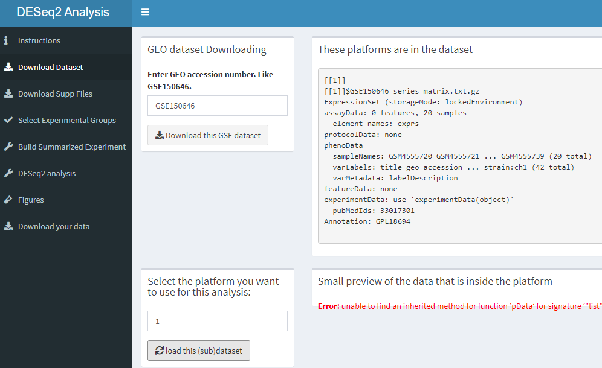
5.2 Downloading supfiles and untar/unzip functions.
5.2.1 The working code behind the application.
The code for downloading the supfiles is really simmilar to the download function. Only it loads the supdata, instead of the entire dataset.
new_supp_download_fucntion <- function(gse_id_number) {
datasets <- strsplit(gse_id_number, split = " ") %>% unlist
full_paths <- file.path(here::here("data"), datasets)
data_supp <- map2(
.x = datasets,
.y = full_paths,
getGEOSuppFiles,
makeDirectory = FALSE,
#baseDir = getwd(),
fetch_files = TRUE,
filter_regex = NULL
)
return(data_supp)
}This is the old function that is used to unzip and untar the GSE dataset.
untar_unzip_function <- function(gse_id_number){
#list files that are in the supp files directory
files <- list.files(here::here("data", gse_id_number), full.names = TRUE)
#look for .tar extension and use this value to subset the list
tar_files <- str_subset(files, ".tar")
#loop through the list and untar the files
for (x in tar_files){
untar(x, exdir = file.path(here::here("data", gse_id_number)))
}
#remove tar files because we are done with them
file.remove(tar_files)
#look again at the files that are now in the directory and list them
files <- list.files(here::here("data", gse_id_number), full.names = TRUE)
#determine what files are zipped
gz_files <- str_subset(files, ".gz")
#loop through the list and unzip the files
for (x in gz_files){
gunzip(x)
}
filenames <- list.files(here::here("data", gse_id_number))
return(filenames)
}The new unzip function is created. We used this function to unzip the CSV data files.
new_unzip_function <- function(gse_id_number) {
datasets <- strsplit(gse_id_number, split = " ") %>% unlist
full_paths <- file.path(here::here("data"), datasets)
files_zip <- list.files(path = here::here("data", datasets), full.names = TRUE, pattern = ".gz")
unzipp <- map(
.x = files_zip,
.f = GEOquery::gunzip
)
return(files_zip)
} 5.3 Supplementary files download and make assaydata tab
5.3.1 Shiny
5.3.1.1 Server.R
This is the code used in the server to load the supp files and untar and unzip the data. This code isn't working proprely, one line off code is turned off, because we couldn't create a code that can load the supp files of both text files and CSV files.
#Choose what data will be downloaded
supp_files_csv <- eventReactive(input$action_download_supp_files_csv, {
new_supp_download_fucntion(gse_id_number())
})
#Show a list of supp files found in the folder
output$list_of_downloaded_files <- renderTable(supp_files_csv())
# output$list_of_downloaded_files <- renderTable(supp_files_txt())
#Untar and unzip the dataset.
observeEvent(input$action_untar_unzip_supp_files_csv, {
new_unzip_function(gse_id_number())
})
observeEvent(input$action_untar_unzip_supp_files_txt, {
untar_unzip_function(gse_id_number())
})5.3.1.2 UI.R
tabItem(tabName = "supp_files_assay_data",
fluidRow(
#select what columns to view
box(
title = "download the supplementary files",
width = "10",
actionButton("action_download_supp_files_csv", label = "download supp files (CSV)", icon("download", lib = "font-awesome")),
actionButton("action_download_supp_files_tsv", label = "download supp files (TSV)", icon("download", lib = "font-awesome")),
actionButton("action_download_supp_files_txt", label = "download supp files (txt)", icon("download", lib = "font-awesome")),
actionButton("action_download_supp_files_etc", label = "download supp files (etc)", icon("download", lib = "font-awesome"))
),
#show a list of supp files found in the folder
box(
title = "Show a list of supplementary files that have been downloaded.",
width = "10",
tableOutput("list_of_downloaded_files")
),
#untar and unzip
box(
title = "untar and unzip files",
width = "10",
actionButton("action_untar_unzip_supp_files_csv", label = "untar and unzip supp files csv", icon("download", lib = "font-awesome")),
actionButton("action_untar_unzip_supp_files_txt", label = "untar and unzip supp files txt", icon("download", lib = "font-awesome"))
),
#show files that have been untarred and unzipped
box(
title = "Show a list of supplementary files that have been unzipped.",
width = "10",
verbatimTextOutput("list_of_untarred_files")
),
#Sample selection box, this uses names of files that are in the data --> "GSE###### folder". The boxes that are selected will be saved to input$sample_choices.
box(
title = "Select samples",
width = "3",
uiOutput("sample_choices")
),
fluidRow(
box(
width = 10,
"Is the sample selection box empty? This is likely due to the folder being empty at the time the GSE number was entered. To fix this simply go to the 'download dataset' tab and click another time on the 'download this GSE dataset' button.
The sample selection boxes should now appear. To fix this problem some sort of 'refresh' button needs to be coded but this is not very straight-forward when submitButtons can not be used."
))
))How this dashboard looks like.
knitr::include_graphics("dashboard_pictures/supp_files_tab.PNG")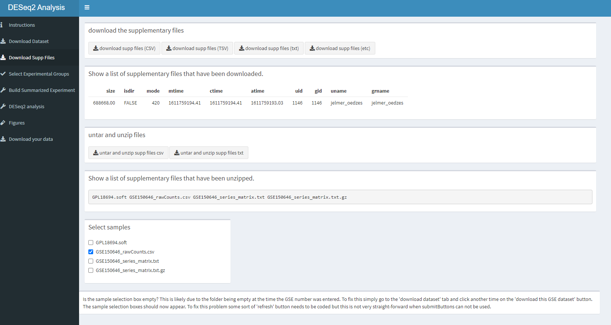
5.4 Groupselection tab
wow hier kan je niets doen.
How this dashboard looks like.
knitr::include_graphics("dashboard_pictures/experimental_groups_tab.PNG")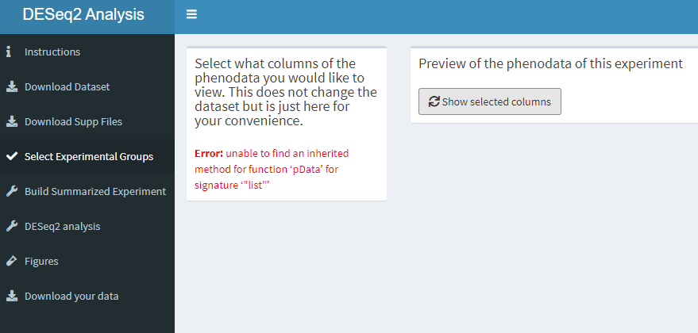
5.5 Build summarized experiment function
5.5.1 The working code behind the application.
In the code below we will create a function for building a summarized experiment. This function will be called "build_summ_exp_function_csv". To begin we will create the phenodata. The the colnames are then created by seperating the different characteristics of the dataset. By line 33 there is a path created where the data will be stored on the server. Here you can also see that the code is created for csv files. For furher research we will only need the raw counts from the dataset. These are isolated. At the end the metadata is created. The function return() wil return the results.
build_summ_exp_function_csv <-function(gse_id_number){
phenodata_data <- getGEO(gse_id_number)
phenodata_tbl <- map_df(phenodata_data,
pData) %>% as_tibble()
colnames(phenodata_tbl)[11] <- "dev_stage"
colnames(phenodata_tbl)[12] <- "genotype"
phenodata_csv <- phenodata_tbl[2:41]
samplenames_csv<- phenodata_tbl[1]
load_csv_data <- list.files(path = here::here("data", gse_id_number), full.names = TRUE, pattern = ".csv")
csv_data <- read.csv(load_csv_data)
raw_counts_csv_data <- csv_data[2:21]
raw_counts_csv_data_matrix <- data.matrix(raw_counts_csv_data)
rowdata_csv_data <- raw_counts_csv_data$`Gene symbol`
rownames(raw_counts_csv_data_matrix) <- rowdata_csv_data
colnames(raw_counts_csv_data) <-samplenames_csv[[1]]
se <- SummarizedExperiment(assays = raw_counts_csv_data_matrix,
rowData = rowdata_csv_data,
colData = phenodata_csv)
metadata(se)$metadata <- metadata
return(se)
}5.5.2 Shiny
5.5.2.1 Server.R
In the code below from the server, the created function for summarized experiment is used. The output of the code below is the assay data (raw counts) from the dataset. We renamed se to se_2, because the code wouldn't work if the name was the same as the se name in the function.
se_2 <- eventReactive(input$build_sum_csv, {
build_summ_exp_function_csv(gse_id_number())
})
output$tbl_assaydata_preview <- DT::renderDataTable(
SummarizedExperiment::assay(se_2()),
style = "bootstrap",
server = TRUE)5.5.2.2 ui.R
Below is the code for the tab that contains the summarized experiment. The checkboxGroupInput is turned off, because this wasn't working probaly. We wanted to add this in so that the user can change the chosen names. The last box shows the selected colnames of the phenodata.
tabItem(tabName = "build_summarized_experiment",
verticalLayout(
box(
title = "Make a summarizedExperiment",
width = "10",
#actionButton("setup_se", label = "setup for summerizedExperiment", icon("download", lib = "font-awesome")),
#build experiment
#checkboxGroupInput("sample_choises", "selected_samples"),
#textInput("test_selected", "Enter a copy of the sample_choises you want to test."),
actionButton("build_sum_csv", "build se from csv", icon = icon("wrench", lib = "font-awesome")),
actionButton("build_sum_txt", "build se from txt", icon = icon("wrench", lib = "font-awesome")),
box(
title = "Preview of the assaydata of this summarized experiment",
width = "12",
dataTableOutput("tbl_assaydata_preview")
)
)))How this dashboard looks like.
knitr::include_graphics("dashboard_pictures/SE_tab.PNG")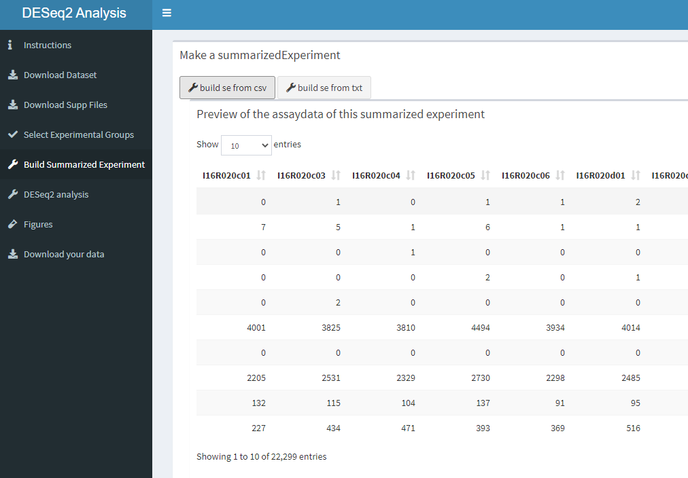
5.5.2.3 Deseq2 function
5.5.3 Make DESeq2 tab
This page is quite simple, we make a box where the data will be rendered. With an actionbutton the user will be able to activate the "deseq2_function"
How this dashboard looks like.
knitr::include_graphics("dashboard_pictures/Deseq2_tab.PNG")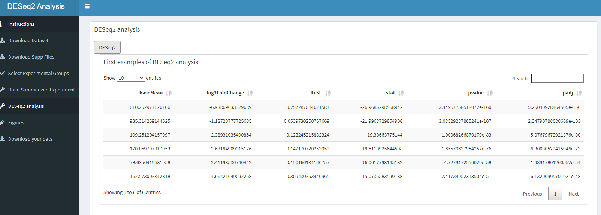
5.5.4 Figures
Inside the figure tab we need to make boxes so the figures have a place to go, we also have to make an actionbutton so only the figures you want will be displayed. For now this doesn't work. Pressing one button will give you all the figures. This will give a long loading time, so we want to add a loading barr.
#figures tab UI
tabItem(tabName = "make_figures",
fluidRow(
box(
title = "PCA",
width = "10",
actionButton("calculate_PCA", "First examples of PCA"),
box(
title = "First examples of PC analysis",
width = "12",
plotOutput("matrix_PCA")
)),
box(
title = "Heatmap",
width = "10",
actionButton("calculate_heatmap", "Heatmap top 20"),
box(
title = "heatmap",
width = "12",
plotOutput("matrix_heatmap")
)),
box(
title = "Histogram",
width = "10",
actionButton("calculate_histogram", "histogram"),
box(
title = "This is a Histogram",
width = "12",
plotOutput("matrix_Histogram")
)),
box(
title = "Vulcan plot",
width = "10",
actionButton("calculate_Vulcan", "Vulcan"),
box(
title = "This is a Vulcan plot",
width = "12",
plotOutput("matrix_Vulcan")
))
))#figures tab server
#PCA plot maken
pca_plot <- eventReactive(input$calculate_PCA, {
pca_function(se_input = se_2())
})
output$matrix_PCA <- renderPlot ({
pca_function(se_input = se_2())
})
#Heatmap maken
heatmap_plot <- eventReactive(input$calculate_heatmap, {
heatmap_function(se_input = se_2())
})
output$matrix_heatmap <- renderPlot ({
heatmap_function(se_input = se_2())
})
#Histogram
histogram_plot <- eventReactive(input$calculate_histogram, {
geom_histogram_function(se_input = se_2())
})
output$matrix_Histogram <- renderPlot ({
geom_histogram_function(se_input = se_2())
})
#Vulcan
vulcan_plot <- eventReactive(input$calculate_Vulcan, {
vulcan_function(se_input = se_2())
})
output$matrix_Vulcan <- renderPlot ({
vulcan_function(se_input = se_2())
})How the PCA looks like.
knitr::include_graphics("dashboard_pictures/PCA_tab.PNG")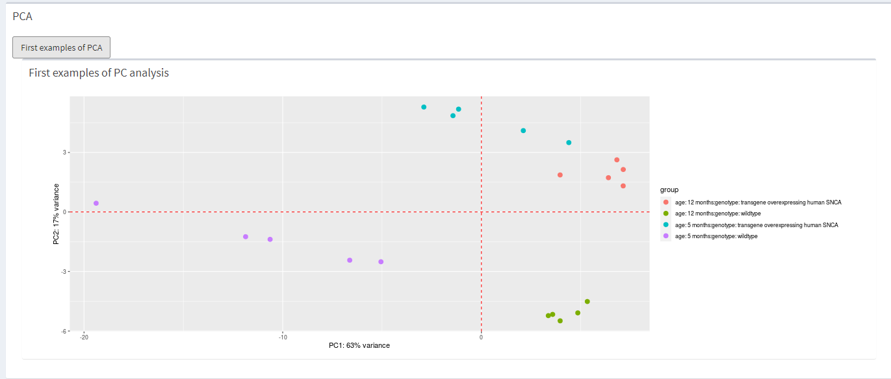 How the heatmap looks like.
knitr::include_graphics("dashboard_pictures/heatmap_tab.PNG")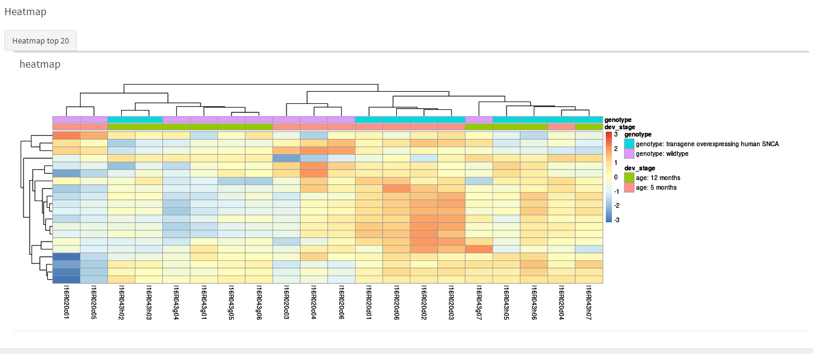 How the histogram looks like.
knitr::include_graphics("dashboard_pictures/Histogram_tab.PNG")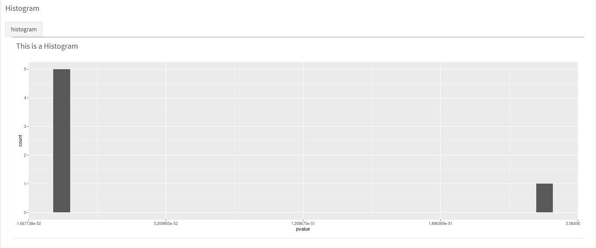 How the vulcan plot looks like.
knitr::include_graphics("dashboard_pictures/vulcan_plot.PNG")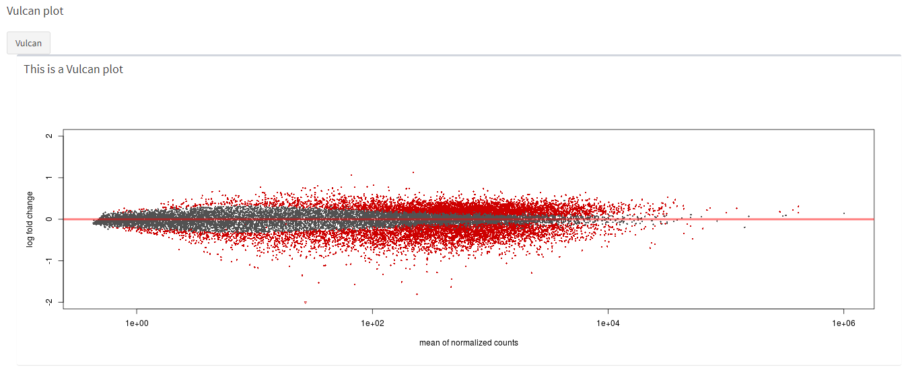
5.5.4.1 PCA function
#PCA fucntion
pca_function <- function(se_input){
#We need to do the first steps of the DESeq2 again, we are looking for a solution to make this easier
ddsSE <- DESeq2::DESeqDataSet(se_input, design = formula(~dev_stage + genotype))
#ddsSE <- DESeq2::DESeqDataSet(se, design = formula(~dev_stage + infection_genotype))
keep <- rowSums(counts(ddsSE)) >= 10
ddsSE <- ddsSE[keep,]
ddsDE <- DESeq(ddsSE)
ddsDE_rlog <- ddsDE %>%
rlogTransformation()
#Make the pca_plot,, dev_stage and genotype needs to be params
pca_plot <- ddsDE_rlog %>%
DESeq2::plotPCA(intgroup = c("dev_stage", "genotype")) +
geom_vline(xintercept = 0, linetype = "dashed", colour = "red") +
geom_hline(yintercept = 0, linetype = "dashed", colour = "red")
return(pca_plot)
}5.5.4.2 Make PCA figure
tabItem(tabName = "make_figures",
fluidRow(
box(
title = "PCA",
width = "10",
actionButton("calculate_PCA", "First examples of PCA")#PCA plot maken
pca_plot <- eventReactive(input$calculate_PCA, {
pca_function(se_input = se_2())
})
output$matrix_PCA <- renderPlot ({
pca_function(se_input = se_2())
})How this dashboard looks like.
knitr::include_graphics("dashboard_pictures/download_tab.PNG")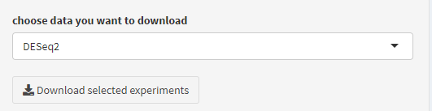
5.5.4.3 Heatmap function
heatmap_function <- function(se_input){
#First part is the deseq2 function again
ddsSE <- DESeq2::DESeqDataSet(se_input, design = formula(~dev_stage + genotype))
keep <- rowSums(counts(ddsSE)) >= 10
ddsSE <- ddsSE[keep,]
ddsDE <- DESeq(ddsSE)
ddsDE_rlog <- ddsDE %>%
rlogTransformation()
matrix_results <- assay(ddsDE_rlog)
ind <- matrix_results %>%
rowMeans() %>%
order(decreasing = TRUE)
top20 <- matrix_results[ind[1:20],]
annot_df <- as.data.frame(colData(ddsDE)[,c("dev_stage","genotype")])
heatmap <- pheatmap(top20,
scale = "row",
annotation_col = annot_df)
return(heatmap)
}5.5.4.4 Make heatmap figure of top 20
box(
title = "Heatmap",
width = "10",
actionButton("calculate_heatmap", "Heatmap top 20"),
box(
title = "heatmap",
width = "12",
plotOutput("matrix_heatmap")
))#Heatmap maken
heatmap_plot <- eventReactive(input$calculate_heatmap, {
heatmap_function(se_input = se_2())
})
output$matrix_heatmap <- renderPlot ({
heatmap_function(se_input = se_2())
})5.5.4.5 Histogram code
geom_histogram_function <- function(se_input) {
#We need to do the first steps of the DESeq2 again, we are looking for a solution to make this easier
ddsSE <- DESeq2::DESeqDataSet(se_input, design = formula(~dev_stage + genotype))
#ddsSE <- DESeq2::DESeqDataSet(se, design = formula(~dev_stage + genotype))
keep <- rowSums(counts(ddsSE)) >= 10
ddsSE <- ddsSE[keep,]
#run differential expression analysis
ddsDE<- DESeq(ddsSE)
#Results
res <- results(ddsDE)
head_res <- res[order(res$padj), ] %>% head
# show distribution of p-values
Histogram_iets <-ggplot(as(head_res, "data.frame"), aes(x = pvalue)) +
geom_histogram()
return(Histogram_iets)
}
#5.5.4.6 Make histogram figure
box(
title = "Histogram",
width = "10",
actionButton("calculate_histogram", "histogram"),
box(
title = "This is a Histogram",
width = "12",
plotOutput("matrix_Histogram")
))#Histogram
histogram_plot <- eventReactive(input$calculate_histogram, {
geom_histogram_function(se_input = se_2())
})
output$matrix_Histogram <- renderPlot ({
geom_histogram_function(se_input = se_2())
})5.5.4.7 Vulcan plot code
vulcan_function <-function(se_input) {
ddsSE <- DESeq2::DESeqDataSet(se_input, design = formula(~dev_stage + genotype))
#ddsSE <- DESeq2::DESeqDataSet(se, design = formula(~dev_stage + genotype))
keep <- rowSums(counts(ddsSE)) >= 10
ddsSE <- ddsSE[keep,]
#run differential expression analysis
ddsDE<- DESeq(ddsSE)
#Results
res <- results(ddsDE)
head_res <- res[order(res$padj), ] %>% head
top5genes <- rownames(res[order(res$padj), ])[1:5]
resLFC <- lfcShrink(ddsDE,
coef = "dev_stage_age..5.months_vs_age..12.months" )
Vulcan_iets <-DESeq2::plotMA(resLFC, ylim=c(-2,2))
return(Vulcan_iets)
}5.5.4.8 Make vulcan plot
box(
title = "Vulcan plot",
width = "10",
actionButton("calculate_Vulcan", "Vulcan"),
box(
title = "This is a Vulcan plot",
width = "12",
plotOutput("matrix_Vulcan")
))#Vulcan
vulcan_plot <- eventReactive(input$calculate_Vulcan, {
vulcan_function(se_input = se_2())
})
output$matrix_Vulcan <- renderPlot ({
vulcan_function(se_input = se_2())
})5.5.5 Download data tab
We want to be able to download the data, this doesn't work yet.